广亚集团智铝数字企业平台
使用说明文档
一． 登录系统.................................1
二． 退出登录.................................1
三． 修改账号密码.............................2
四． 菜单栏操作...............................2
五． 选项卡操作...............................3
六． 分页栏操作...............................3
七． 广亚技术资料维护员........................4
1. 广亚型材颜色管理员........................4
2. 广亚型材管理员...........................5
八． 跟单人员.................................7
1. 广亚跟单主管.............................7
2. 广亚跟单员...............................7
3. 广东广亚跟单主管.........................11
4. 广东广亚跟单员...........................16
九． 广亚客户.................................19
1. 营销管理系统............................19
2. 客户门户系统............................20
- 在电脑浏览器的地址栏内，输入http://119.145.166.70:7010/login并按“回车”按键，跳转到登录页面（如图1）。
- 用户登录时，需要提供账号与密码。输入账号与密码后（可选择打勾“记住用户名”，下次登录不需要重复输入账号与密码，但勿在公用机器上选择。），点击“登录”，即可登录系统，进入主界面。
-
当用户第一次登陆的时候，会有如下图提示，请马上修改账号密码，以免造成不必要的损失。
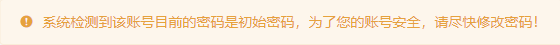
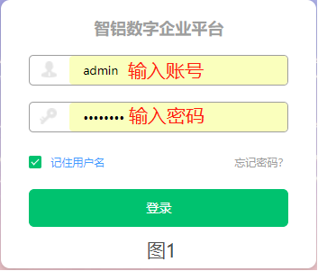
- 鼠标移到界面右上角账号名处，可见（图2）。点击退出，即可退出当前登录的账号，并跳转到登录页面。
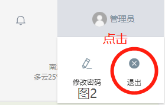
- 鼠标移到界面右上角账号名处，可见（图3）。点击修改密码，即可弹出重置密码页面（图4）。
- 输入两遍新密码。
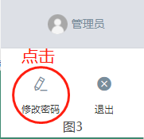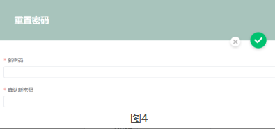
- 登录账号后，可点击左上角的“全部功能”（图7），来查看当前账号所有的可供选择的功能操作，也可点击来进行该功能的进一步操作。
- 常用的功能按钮，可点击该按钮前的“♡”，将该功能按钮添加到常用菜单列表下；点击按钮前的“❤”可将该功能按钮从常用菜单列表下移除。
- 常用菜单过多的时候，可于常用菜单范围内滚动鼠标滚轮，对常用菜单进行上滚或下滚。
- 点击菜单栏右上角旁的“≡”按钮，可以隐藏或显示菜单栏。（如图24）
- 5.点击菜单栏“智铝数字企业平台”下方的“∨”按钮，可以选择切换当前的操作系统（如图24）。
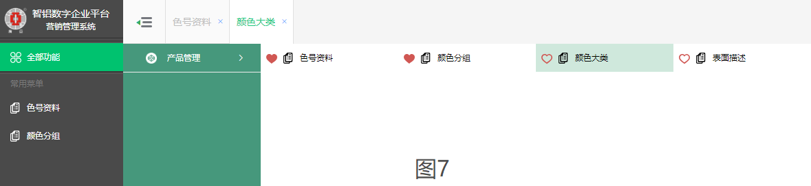
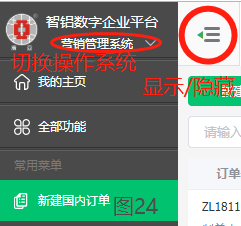
- 当有多个选项卡出现的时候（图6），可点击选项卡切换，也可点击选项卡上的“×”或在选项卡位置单击鼠标滚轮，把选项卡关闭。
- 选项卡过多的时候，可于选项卡范围内滚动鼠标滚轮，对选项卡进行左、右滚动。
- 点击“”按钮，修改列表每页显示的信息数量，如下图。
- 点击左、右箭头，实现跳转上一页、下一页；点击省略号，实现跳转多页；点击数字，实现跳转到指定页数页。
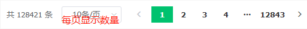
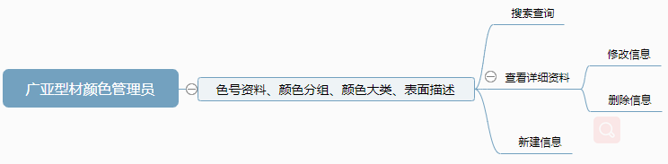
1）色号资料（图8）、颜色分组、颜色大类、表面描述
①搜索查询。点击左上方的搜索栏或“更多查询”，然后输入搜索内容，点击“查询”按钮或按“回车”按键，进行快速条件查询。
②查看详细信息。点击左方的列表信息，在右方表单进行详细信息查看。
③修改信息。在点击左方的单条列表信息后，右方表单的右上角，点击“”按钮，可进入编辑模式。
④新建信息。点击左上方“新建”按钮，在右方可进行信息的填写。
⑤删除信息。在点击左方的单条列表信息后，在右方表单的右上角，点击“”按钮，在弹出的选择框点击确认，可把当前的信息删除。
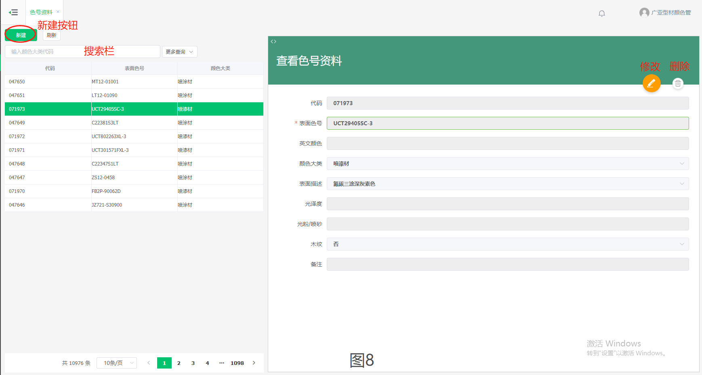
1）录入型号、型材系列
①搜索查询。点击左上方的搜索栏或“更多查询”，然后输入搜索内容，点击“查询”按钮或按“回车”按键，进行快速条件查询。
②查看详细信息。点击左方的列表信息，在右方表单进行详细信息查看。
③修改信息。在点击左方的单条列表信息后，右方表单的右上角，点击“”按钮，可进入编辑模式。
④新建信息。点击左上方“新建”按钮，在右方可进行信息的填写。
⑤删除信息（型材系列）。在点击左方的单条列表信息后，右方表单的右上角，点击“”按钮，在弹出的选择框点击确认，可把当前的信息删除。
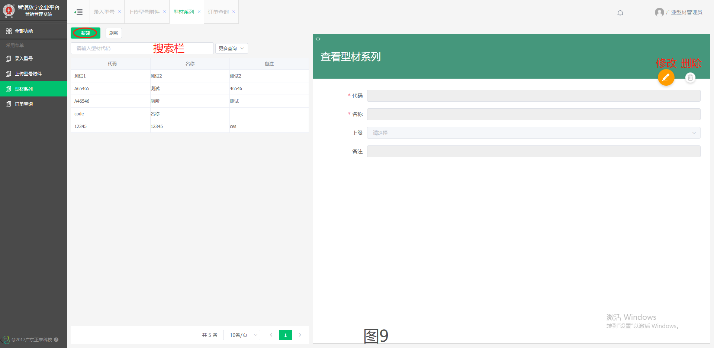
2）订单查询
①搜索查询（图10）。在上方的搜索栏，或单击“更多查询”，输入搜索内容，点击“查询”按钮，进行快速条件查询。
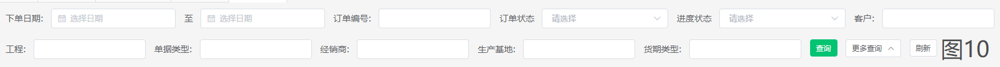
②查看详细信息。点击下方的列表信息，查看该条信息的详细内容，点击右上角的“”按钮，返回列表信息。
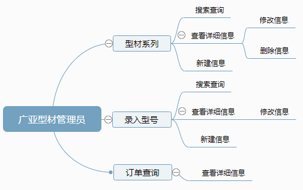
1）签批国内网单
①搜索查询。在左上方的搜索栏，或单击“更多查询”，输入搜索内容，点击“查询”按钮或按“回车”按键，进行快速条件查询。
②查看详细信息。点击左方的列表信息，在右方表单进行详细信息查看。
③批量签批。在选择的列表信息前的复选框“”打勾“”，再按左上角的“批量签批”按钮，即可进行单一签批或批量签批。如下图，在列表信息头，单击一次全选框，自动选择全部列表信息，再单击一次全选框，自动剔除所有选择。
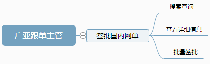
1）新建国内订单（如图14、图15）、新增国内装车单
①搜索查询。在列表信息上方“”的选框，勾选只显示自己新建的订单信息（默认勾选），不勾选显示所有的订单信息。在左上方的搜索栏，或单击“更多查询”，输入搜索内容，点击“查询”按钮或按“回车”按键，进行快速条件查询。
②查看详细信息。点击左方的列表信息，在右方表单进行详细信息查看。
③新建信息。点击左上方“新建”按钮，在右方可进行信息的填写，完成后，信息会进入“制单中”状态。点击右方表单的右上角“”按钮，复制新增一份信息。
④编辑信息。点击选择“制单中”状态的列表信息后，右方表单的右上角，点击“”按钮，可进入编辑模式。
⑤删除信息。在点击左方的单条列表信息后，右方表单的右上角，点击“”按钮，在弹出的选择框点击确认，可把当前的信息删除。
增加订单明细。点击选择“制单中”状态的列表信息后，右方表单的左上角，点击“”按钮，进行订单明细的增加；也可点选已存在的其他订单明细，再点击“”按钮，复制一份点选的订单明细。完成后点击“”按钮，保存操作；点击“”按钮，撤销当前订单明细操作。
⑦修改订单明细。点击选择“制单中”状态的列表信息后，选择订单明细，进入该条订单明细的编辑模式。
⑧删除订单明细。点击选择“制单中”状态的列表信息后，点击订单明细的最右方的“”按钮，删除该条订单明细。
⑨提交订单。点击选择“制单中”状态的列表信息后，右方表单的右上角，点击“”按钮，提交当前订单，订单状态更改为“已提交”。订单一旦提交，不可再对订单进行修改或删除操作。

⑩撤回提交订单。点击选择“已提交”状态的列表信息后，点击右方表单右上角的“”按钮，把已提交的订单撤回。审核后的订单不能撤回。
⑪单条审核。点击选择“已提交”状态的列表信息后，点击右方表单右上角的“”按钮，进行单条信息审核。
⑫批量审核。在选择的“已提交”状态的列表信息前的复选框“”打勾“”，再按左上角的“批量审核”按钮，即可进行单一审核或批量审核。如下图，在列表信息头，单击一次全选框，自动选择全部列表信息，再单击一次全选框，自动剔除所有选择。
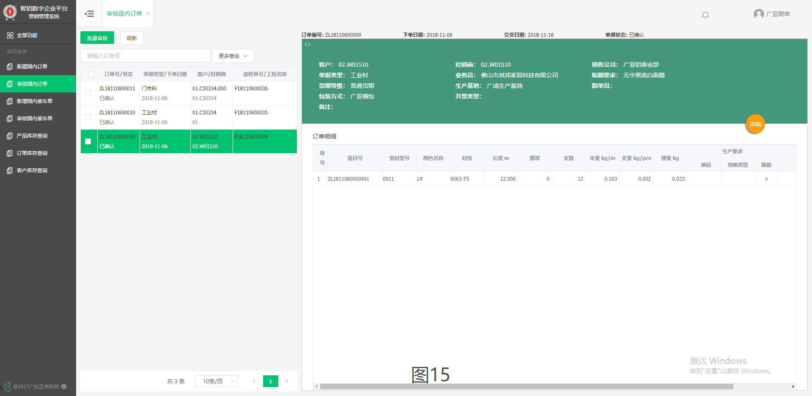
3）订单库存查询（如图16）、产品库存查询、客户库存查询
①搜索查询。在上方的搜索栏，输入搜索内容，点击“查询”按钮，进行快速条件查询。
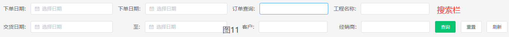
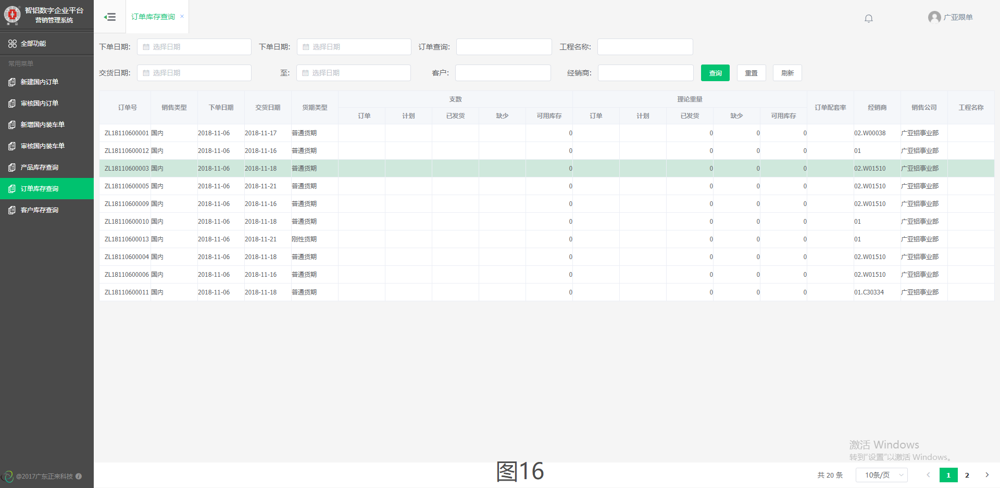
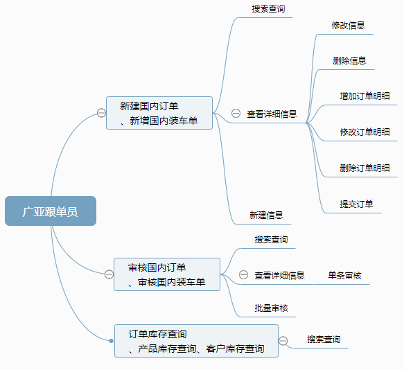
1）新增客户(如图13）
①搜索查询。点击左上方的搜索栏或“更多查询”，然后输入搜索内容，点击“查询”按钮或按“回车”按键，进行快速条件查询。
②查看详细信息。点击左方的列表信息，在右方表单进行详细信息查看。
③修改信息。在点击左方的单条列表信息后，右方表单的右上角，点击“”按钮，可进入编辑模式。
④新增私人客户。点击左上方的“新增私人客户”按钮，在右方表单进行信息的填写。
⑤新增企业公司。点击左上方的“新增企业公司”按钮，在右方搜索栏输入已在工商注册的公司信息（例如：公司名字、工商号），并按“回车”按键跳转到该企业表单信息，进行信息的填写。
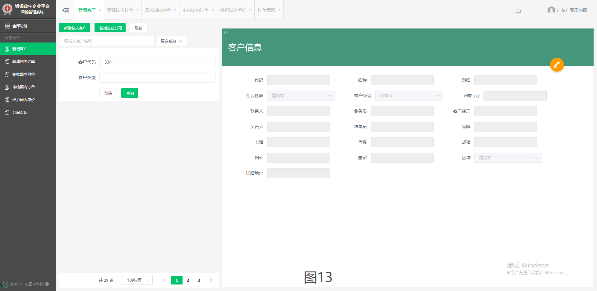
2）新建国内订单（如图17）
①搜索查询。点击左上方的搜索栏或“更多查询”，然后输入搜索内容，点击“查询”按钮或按“回车”按键，进行快速条件查询。
②查看详细信息。点击左方的列表信息，在右方表单进行详细信息查看。
③修改信息。在点击左方的单条列表信息后，右方表单的右上角，点击“”按钮，可进入编辑模式。
④新建信息。点击左上方“新建”按钮，在右方可进行信息的填写。选择单条列表信息，点击右上方的“复制新增”按钮，实现订单的复制功能。
⑤删除信息。在点击左方的单条列表信息后，右方表单的右上角，点击“”按钮，在弹出的选择框点击确认，可把当前的信息删除。

3）签批国内网单（如图18）
①搜索查询。在左上方的搜索栏，或单击“更多查询”，输入搜索内容，点击“查询”按钮或按“回车”按键，进行快速条件查询。
②查看详细信息。点击左方的列表信息，在右方表单进行详细信息查看。
③批量签批。在选择的列表信息前的复选框“”打勾“”，再按左上角的“批量签批”按钮，即可进行单一签批或批量签批。如下图，在列表信息头，单击一次全选框，自动选择全部列表信息，再单击一次全选框，自动剔除所有选择。
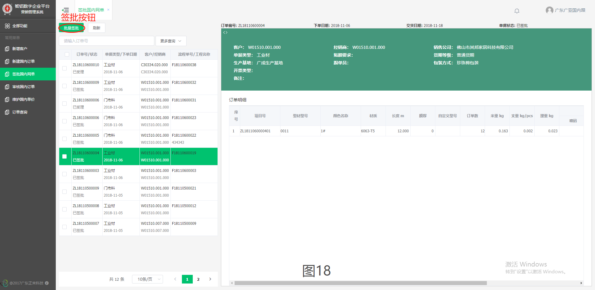
4）审核国内订单
①搜索查询。在左上方的搜索栏，或单击“更多查询”，输入搜索内容，点击“查询”按钮或按“回车”按键，进行快速条件查询。
②查看详细信息。点击左方的列表信息，在右方表单进行详细信息查看。
③单条审核。在点击左方单条列表信息后，点击右方表单右上角的“”按钮，进行单条信息审核。
④批量审核。在选择的列表信息前的复选框“”打勾“”，再按左上角的“批量审核”按钮，即可进行单一审核或批量审核。如下图，在列表信息头，单击一次全选框，自动选择全部列表信息，再单击一次全选框，自动剔除所有选择。
5）维护国内单价
①搜索查询。点击左上方的搜索栏或“更多查询”，然后输入搜索内容，点击“查询”按钮或按“回车”按键，进行快速条件查询。
②查看详细信息。点击左方的列表信息，在右方表单进行详细信息查看。
③修改信息。在点击左方的单条列表信息后，右方表单的右上角，点击“”按钮，可进入编辑模式。
6）订单查询
①搜索查询（图19）。在上方的搜索栏，或单击“更多查询”，输入搜索内容，点击“查询”按钮，进行快速条件查询。
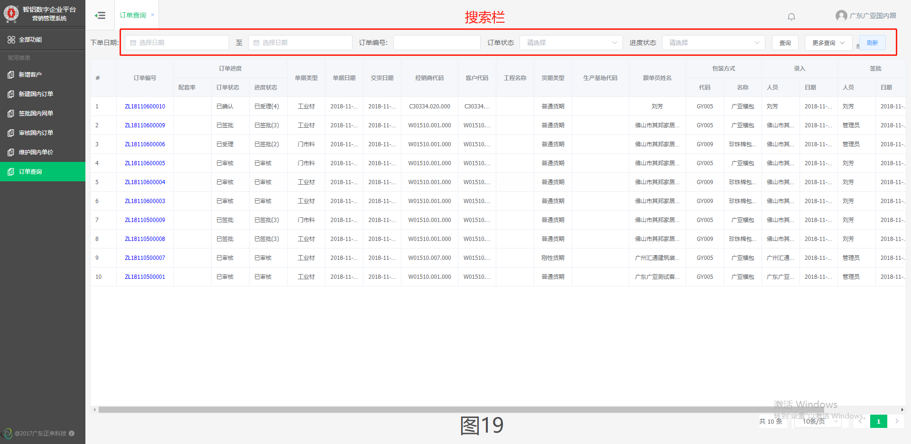
②查看详细信息（图20）。点击下方的列表信息，查看该条信息的详细内容。点击右上角的“”按钮，返回列表信息。
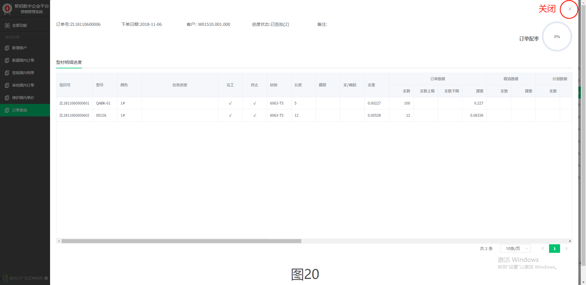
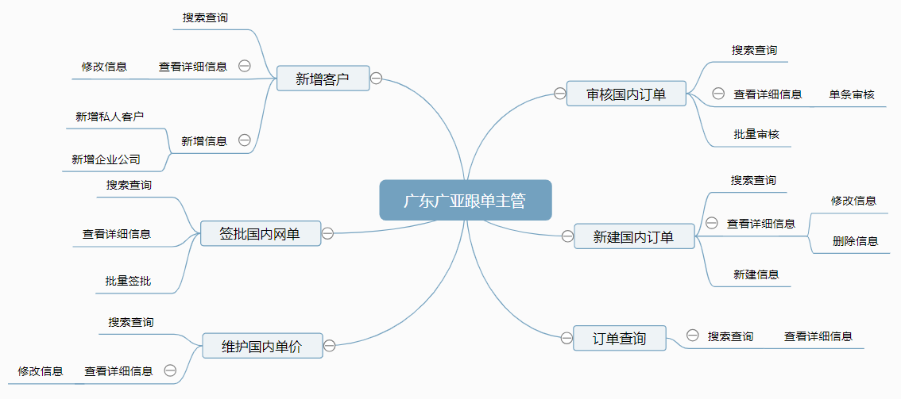
1）新建国内订单（如图21）、新增国内装车单
①搜索查询。点击左上方的搜索栏或“更多查询”，然后输入搜索内容，点击“查询”按钮或按“回车”按键，进行快速条件查询。
②查看详细信息。点击左方的列表信息，在右方表单进行详细信息查看。
③修改信息。在点击左方的单条列表信息后，右方表单的右上角，点击“”按钮，可进入编辑模式。
④新建信息。点击左上方“新建”按钮，在右方可进行信息的填写。选择单条列表信息，点击右上方的“复制新增”按钮，实现订单的复制功能。
⑤删除信息。在点击左方的单条列表信息后，右方表单的右上角，点击“”按钮，在弹出的选择框点击确认，可把当前的信息删除。
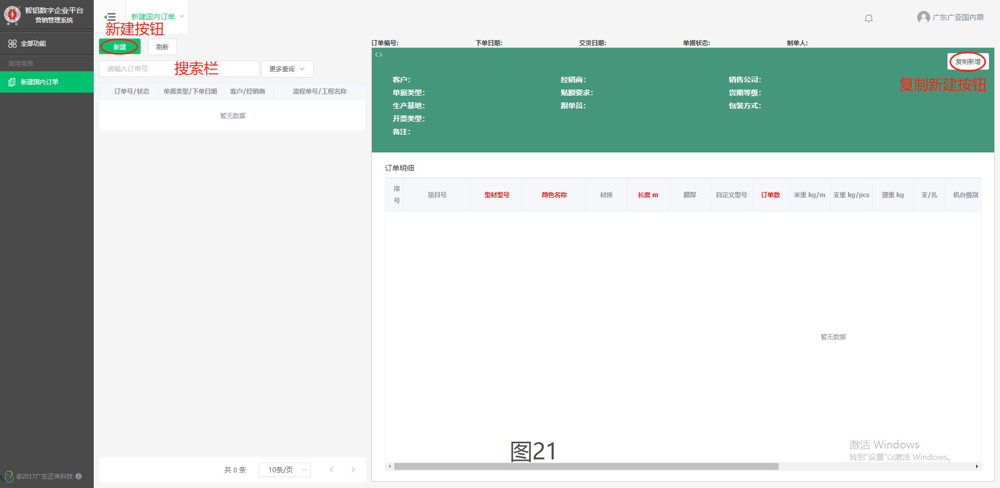
2）审核国内订单（如图22）、审核国内装车单
①搜索查询。在左上方的搜索栏，或单击“更多查询”，输入搜索内容，点击“查询”按钮或按“回车”按键，进行快速条件查询。
②查看详细信息。点击左方的列表信息，在右方表单进行详细信息查看。
③单条审核。在点击左方单条列表信息后，点击右方表单右上角的“”按钮，进行单条信息审核。
④批量审核。在选择的列表信息前的复选框“”打勾“”，再按左上角的“批量审核”按钮，即可进行单一审核或批量审核。如下图，在列表信息头，单击一次全选框，自动选择全部列表信息，再单击一次全选框，自动剔除所有选择。
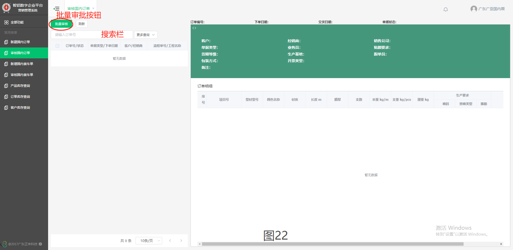
3）订单库存查询（如图23）、产品库存查询、客户库存查询
①搜索查询。在上方的搜索栏，输入搜索内容，点击“查询”按钮，进行快速条件查询。
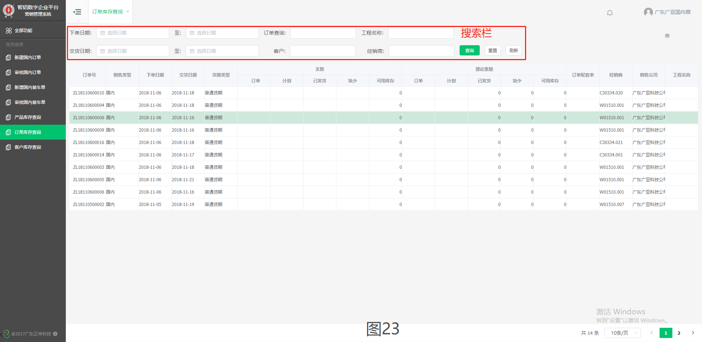
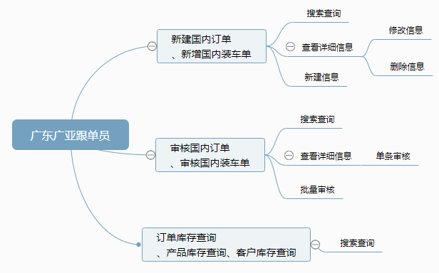
1）客户门户账号
①搜索查询。在左上方的搜索栏，或单击“更多查询”，输入搜索内容，点击“查询”按钮或按“回车”按键，进行快速条件查询。
②禁用账号。在列表信息最右方“操作”字段下，点击“”，可禁用该账号，禁用后该账号信息自动跳到所有已启用账号信息的末尾；点击“”，可重新启动该账号。
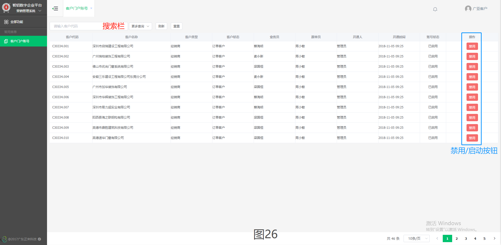
1）经典下单（添加详细订单信息，不添加订单明细）（如图28）、在线下单（添加重要订单信息，同时添加订单明细）（如图27）、预约装车
①搜索查询。在左上方的搜索栏，或单击“更多查询”，输入搜索内容，点击“查询”按钮或按“回车”按键，进行快速条件查询。
②查看详细信息。点击左方的列表信息，在右方表单进行详细信息查看。
③新建信息。点击左上方“新建”按钮，在右方可进行信息的填写，完成后，信息会进入“制单中”状态。“在线下单”的新建订单，部分选项多选（如图27），填写完毕后，点击“”按钮，在下方查看或者修改该订单明细，点击“”按钮，清空订单明细。
④编辑信息。点击选择“制单中”状态的列表信息后，右方表单的右上角，点击“”按钮，可进入编辑模式。
⑤删除信息。点击选择“制单中”状态的列表信息后，右方表单的右上角，点击“”按钮，在弹出的选择框点击确认，可把当前的信息删除。
⑥增加订单明细。点击选择“制单中”状态的列表信息后，右方表单的左上角，点击“”按钮，进行订单明细的增加；也可点选已存在的其他订单明细，再点击“”按钮，复制一份点选的订单明细。完成后点击“”按钮，保存操作；点击“”按钮，撤销当前订单明细操作。
⑦修改订单明细。点击选择订单明细，进入该条订单明细的编辑模式。
⑧删除订单明细。点击订单明细的最右方的“”按钮，删除该条订单明细。
⑨提交订单。点击选择“制单中”状态的列表信息后，右方表单的右上角，点击“”按钮，提交当前订单。订单一旦提交，不可再对订单进行修改或删除操作。

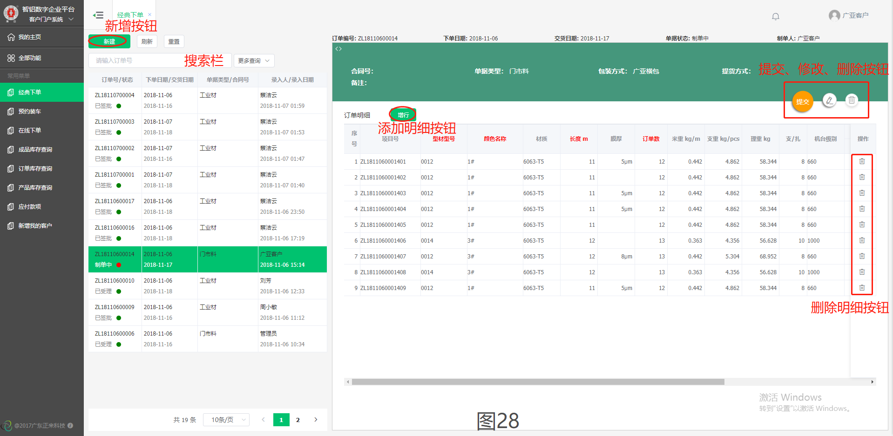
2）订单库存查询（如图29）、产品库存查询、客户库存查询
①搜索查询。在上方的搜索栏，输入搜索内容，点击“查询”按钮，进行快速条件查询。
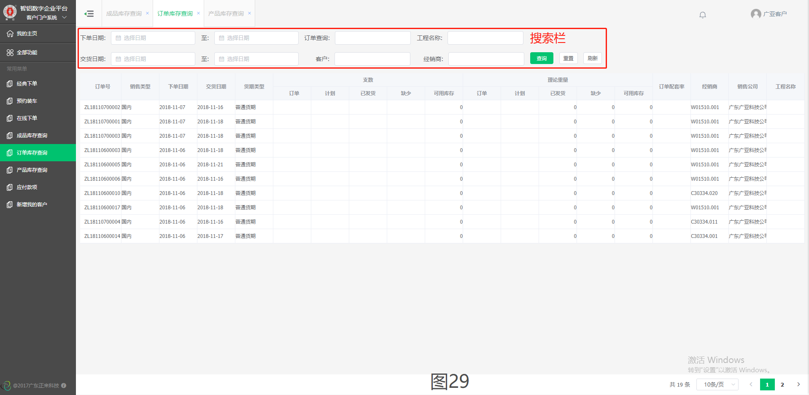
3）新增我的客户
①搜索查询。点击左上方的搜索栏或“更多查询”，然后输入搜索内容，点击“查询”按钮或按“回车”按键，进行快速条件查询。
②查看详细信息。点击左方的列表信息，在右方表单进行详细信息查看。
③修改信息。在点击左方的单条列表信息后，右方表单的右上角，点击“”按钮，可进入编辑模式。”
④新建信息。点击左上方“新建私人客户”按钮，在右方可进行信息的填写。
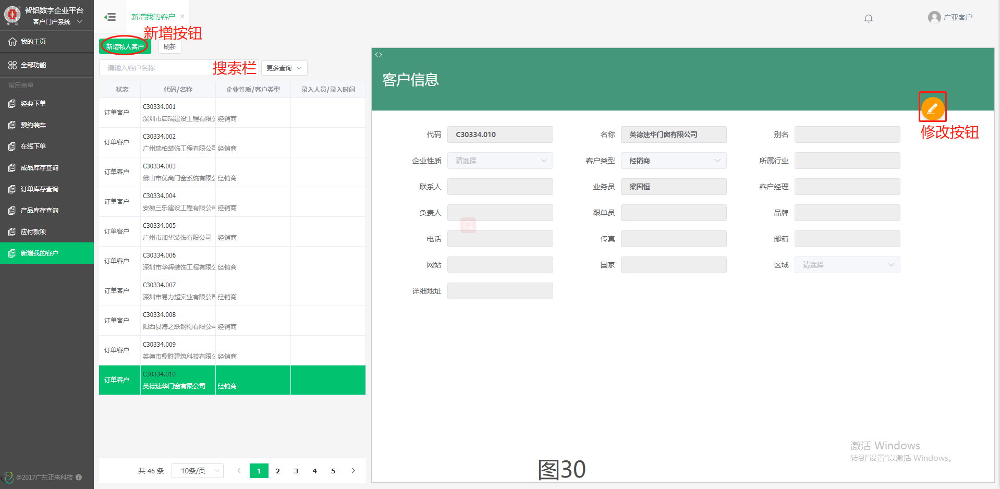
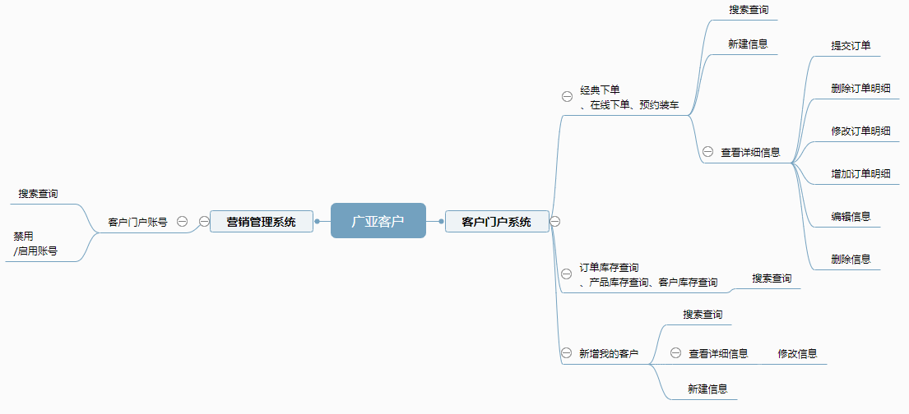
- 在填写或修改文本框时，带红色“*”为必填项，其他为可选填项。
- 带“”符号的文本框，单击拉取下拉菜单进行快速选择，再次单击或点击“取消”收起下拉菜单。
- 带“”符号的文本框，可按“回车”按键拉取下拉菜单，也可以输入内容后按“回车”获得限定内容的下拉菜单。
- 在输入、修改操作后，点击绿色“√”按钮，确定完成该操作；点击“×”，可取消当前操作。
-
表单表头左上方的“<>”按钮，点击拉伸或还原表单。（如图25）
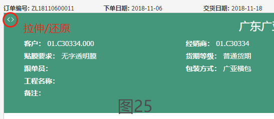
- 点击“重置”按钮，返回全部列表信息。点击“刷新”按钮,刷新当前搜索内容下的列表信息。
-
单击分栏线（如下图）不放，左右拖拽，可放大或缩小该字段大小。
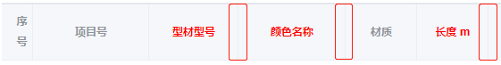
- 菜单栏下方（如下图），点击“i”按钮，弹出平台使用说明文档。
- 在线帮助，请根据客服联系方式，与客服进行咨询、沟通。